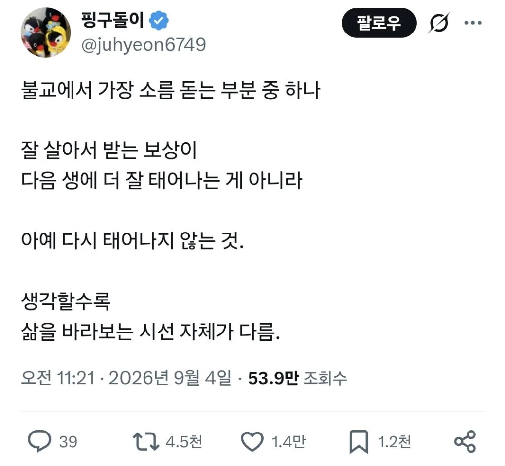

불교에서 잘 살면 받는 보상
댓글
지구가 원래 살기가 힘들어~ 그게 왜그러냐면 진흙속에서 연꽃이 피는 이치거든. 조금 눈돌리면 정말 살기 좋은 다른 세계도 많다. 도솔천에 가면 구원자중의 구원자이신 미륵불도 계시고 극락중의 극락인 서방극락정토 아미타불기거하시는 세계도 있고 석가모니불의 진신인 비로자나불의 연화장세계 아촉불의 묘희정토 약사여래의 유리광정토등등미만잡
요새 사는게 힘들다고 불교에 관심을 가지는건 좋은데. 이상하게 반출생주의적으로 해석을 하면서 독자연구를 한단 말이야. 단멸론으로 가면 어떻게 하냐고.
불교는 세상이 ㅈ같다고 한게 아니라. 헛된 것에 집착하지 말라고 한거지. 십우도에서 나오는 것처럼, 소의 흔적을 찾아서 소를 찾고 길들여서 돌아오고. 소를 잊은 후에 있는 그대로를 보고, 사람들에게 베푸는 것이 결론임.
요약하면, 상구보리 하화중생(上求菩提 下化衆生)으로. 깨달음을 구하고 중생을 구제하여. 깨달으면. 착각과 집착으로 인한 고통을 끝내고, 나와 타인이 함께 완전한 자유와 평정을 누리게 하는건데. 저리 말하면. 그냥 소멸이 엔드컨텐츠 처럼 들리잖아.
쟤들은 결론이 꼭 이상해...
말씀이 좀 어려운데 이번 생에 완전한 자유와 평정을 얻으면 다음 생은 없다? 없어도 된다? 인가요...?
불교에서 윤회를 끝내고 깨달음을 얻는 것이 궁극적인 목표라는 생각 때문에 본문처럼 말하는 것 같은데 말씀하신거랑 어떻게 다른지..
불교 핵심 사상 중 하나가 고집멸도 인데,
본문의 내용은 고집멸도 중 멸을 은유적으로 모호하게 해석해서 불교의 본질 사상을 자칫하면 처음보는 사람이 착각하게 해석되게 만들 수 있음. 그래서 댓글 단 게이가 본문을 불교의 본질은 멸로 이어지는 게 아니라는 걸 지적하고 비판하는 동시에, 깨달음으로 가는 길은 고, 집, 멸을 올바르게 이해함으로써 도 에 이른다고 설명을 해주고 있는데, 설명이 좀 어렵긴 하지.
너 못깨달았어? 다시 태어나서 나머지 공부해
"진엔딩이고 지랄이고 엔딩봤으면 게임 꺼라"
생즉고
나도 이게 맞다봄
부자라고 고민이 없는건 아니고
죽음은 피해갈수 없으니까
안죽어도 문제인거고
고통의 연속이지
아무리 부유해도 고민 고통은 뒤따른다더라
그러니까 지구의 모두를 죽여버리고 영원히 안태어나게하면 된다는거지??
이거 맞음
진공가향 가즈아
백련교가 돼버리네..
불교에서는 삶이란 고통이니까.
고통의 연속이라 끊임 없는 노력을 통해
해탈이 필요한거고
모든걸 해탈할 수 있을때 부처가 되는거임.
그래서 가장 큰 혜택이 안태어나는 거임.
난 불교에 대해 자세히는 모르지만
딱 하나 아는 것
절대신이 없다는 게 참 마음에 들었음..
특히 "나"라는 사람에게 집중해서
수행을 통해 열반에 이르는 것이 목적이라는 것
인간 중심의 종교임...
존나 맞는게 랜덤 가챠로 사람으로 태어날 확률이 10만분의 1 ㅇㅈㄹ이고,
거기서도 한국 이상 잘 사는 나라에 태어날 확률도
10프로 ㅇㅈㄹ임
그럼 윤회하지 않았던 최초의 영혼은 왜 태어난거야?
고통받기 위해?
걍
시발 ㅠ
진엔딩 봤으면 끝내야지
모든 윤회전생을 끝내고 부처가 되는것
모든 루트 엔딩 수집 후 불멸의 전당에 이름 올리는 거랄까?
저게 소승불교인가? 나(애고)가 실재한다는 전제가 있어야 저말이 맞는데 불교에서는 나라는게 없는데 어떻게 공덕을쌓거나 도를닦아서 좋은곳에 환생을 하거나 다시안태어나게 할수있나? 거짓말이거나 방편의 말임
이거인거 같음 사실 태어난적이 없는데 어케 윤회함ㅋㅋ 결국 '나'는 상상된거에 불과한 허깨비고 무지도 없고 고통도 없음
너 지금 공이 무엇인지 깨우쳤구나
삶 = 고통
이건 대승불교에서는 정반대.
반야심경 금강경 법화경 유마경 화엄경이 대표적인 경전이지.
불교의 핵심가르침이 '탐진치를 소멸하여 열반으로 떠나자'에서 '이 존재와 현상,경험 모두 空性의 작용이니, 떠날 곳이 없고, 지금 여기에서 탐진치를 사랑 지혜로 변화시키면 이미 정토와 열반 두세계를 사는 것이다'로 진화함.
무로 돌아가는건가? 그럼 애초에 왜 유가 되어서 고통 받은건가?
이 세상은 일체개고....
원글도 잘못됐고 그래서 댓글들도 방향이 잘못된 질문이 많네.
어떠한 잘함에 대한 보상이 윤회의 고리를 끊는 것이 아니다.
조건들의 연쇄 속에서 만들어진 나라는 실체에 대한 무명과 집착이 윤회를 반복하게 하는 것이다.
그 나라는 자아가 고정된 실체가 아님을 통찰하고 갈애와 집착이 소멸할 때, 윤회를 지속시킬 원인도 함께 사라진다.
그것이 열반이고 윤회의 끝이다.
롤은 가끔은 재밌지만 길게보면 고통이기때문에 롤안하면 편해
불교는 소원을 빌지 않는다며
일단 윤회자체가 힌두교가 섞여서 그런거임...
부처님의 불교를 요약하면
왜 괴로운가? 괴로움에서 벗어날 방법은 없는가?
이거임
"내가 샤아가 될게. 지구 인류를 전부 아라한으로 만들어버릴게"